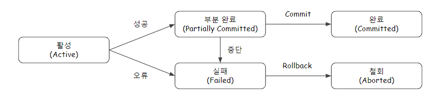

Database Transaction
업데이트:
Transaction
- 은행 ATM이나 데이터베이스 등의 시스템에서 사용되는 더 이상 쪼갤 수 없는 업무 처리의 최소 단위이다.
ACID
원자성(Atomicity)
트랜잭션의 연산은 데이터베이스에 모두 반영되든지 아니면 전혀 반영되지 않아야 한다.
일관성(Consistency)
시스템이 가지고 있는 고정요소는 트랜잭션 수행 전과 트랜잭션 수행 완료의 상태가 같아야 한다.
독립성(Isolation)
수행 중인 트랜잭션은 완전히 완료될 때까지 다른 트랜잭션에서 수행 결과를 참조할 수 없다.
지속성(Durability)
성공적으로 완료된 트랜잭션의 결과는 시스템이 고장나더라도 영구적으로 반영되어야 한다.
트랜잭션 상태(Status)

활성(Active)
트랜잭션이 실행 중인 상태이다.
실패(Failed)
트랜잭션 실행에 오류가 발생하여 중단된 상태이다.
철회(Aborted)
트랜잭션이 비정상적으로 종료되어 Rollback 연산을 수행한 상태이다.
부분 완료(Partially Committed)
트랜잭션의 마지막 연산까지 실행하고, Commit 연산이 실행되기 직전의 상태이다.
완료(Committed)
트랜잭션이 성공적으로 종료되어 Commit 연산을 실행한 후의 상태이다.
트랜잭션 연산(Operation)
Commit
모든 작업들을 정상적으로 처리하겠다고 확정하는 명령어로서, 처리과정을 데이터베이스에 영구적으로 저장하는 것이다.
Rollback
작업 중 문제가 발생하여 트랜잭션의 처리과정에서 발생한 변경사항을 취소하는 명령어이다.
Save Point
롤백을 명시하면 삽입, 삭제, 업데이트 등의 작업 전체가 취소되는데, 세이브포인트는 전체가 아닌 특정 부분에서 트랜잭션을 취소하기 위해 사용한다.
트랜잭션 병행 제어(Concurrency Control)
여러 트랜잭션들이 동시에 실행되면서도 데이터베이스의 일관성을 유지할 수 있게 하는 기법이다.
목적
- 데이터베이스의 일관성을 유지한다.
- 데이터베이스의 공유를 최대화한다.
- 시스템의 활용도를 최대화한다.
- 사용자의 응답시간을 최소화한다.
병행 제어 실패 현상
자원에 대한 경쟁 상태(Race Condition)에서 발생하는 문제이다.
Dirty Write
두 개 이상의 트랜잭션이 같은 데이터를 동시에 바꾸고자하는 문제이다.
Dirty Read
커밋 전 데이터 조회와 롤백 후 데이터 조회의 데이터가 불일치되는 문제이다.
Non-repeatable Read
한 트랜잭션에서 데이터 변경 전과 후 같은 조회 쿼리를 수행 시, 조회된 값이 변경되면서 결과가 달라지는 문제이다.
Phantom Read
한 트랜잭션에서 데이터 추가 전과 후 일정 범위의 레코드를 조회 시, 값이 추가(Phantom Tuple)되면서 결과가 달라지는 문제이다.
Cascade Rollback
두 개 이상의 Transaction이 수행되던 중 한 개의 Transaction이 취소될 때 나머지 다른 Transaction도 연쇄적으로 취소되는 현상.
병행 제어 기법
Locking
- 트랜잭션이 어떤 데이터에 접근하고자 할 때, 다른 트랜잭션이 접근할 수 없게 하는 기법이다.
- 필드, 레코드, 파일, 데이터베이스 모두 Locking 단위가 될 수 있다.
- Locking 단위가 크면, 관리하기 용이(오버헤드 감소)하지만 병행성(동시성) 수준이 낮아진다.
- Locking 단위가 작으면, 병행성(동시성) 수준이 높아지지만 관리가 난해(오버헤드 증가)하다.
2단계 로킹 규약(Two-Phase Locking Protocol)
- Lock과 Unlock이 동시에 이루어지면 일관성이 보장되지 않으므로, Lock만 가능한 단계와 Unlock만 가능한 단계를 구분하는 기법이다.
- 직렬가능성을 보장하며, 교착상태가 발생할 수 있다.
- 확장 단계 : 새로운 Lock은 가능하고 Unlock은 불가능하다.
- 축소 단계 : Unlock 은 가능하고 새로운 Lock은 불가능하다.
Time Stamp
- 데이터에 접근하는 시간을 미리 정해서 정해진 시간(Time Stamp)의 순서대로 데이터에 접근하여 수행하는 기법이다.
- 직렬가능성을 보장하며, 교착상태가 발생하지 않는다.
- 연쇄복귀(Cascading Rollback)를 초래할 수 있다.
낙관적 병행제어(Optimistic Concurrency Control)
- 트랜잭션 수행 동안은 어떠한 검사도 하지 않고, 트랜잭션 종료 시에 일괄적으로 검사하는 기법이다.
- 트랜잭션 수행 동안 그 트랜잭션을 위해 유지되는 데이터 항목들의 지역 사본에 대해서만 갱신한다.
- 트랜잭션 종료 시에 동시성을 위한 트랜잭션 직렬화가 검증되면 일시에 DB로 반영한다.
다중 버전 병행제어(Multi-Version Concurrency Control)
- 여러 버전의 타임스탬프를 비교하여 스케줄상 직렬가능성이 보장되는 타임스탬프를 선택하는 기법이다.
- 동시 접근을 허용하는 데이터베이스에서 동시성을 제어하기 위해 사용하는 방법 중 하나이다.
- Locking을 필요하지 않아서 일반적인 RDBMS보다 빠르게 작동한다.
- 미사용 데이터가 계속 쌓이게 되므로 주기적으로 삭제하는 시스템이 필요하다.
- 여러 버전의 데이터를 허용하기 때문에 버전이 충돌날 수 있으며, 이는 애플리케이션 영역에서 해결해야 한다.
Undo & Redo
Undo
트랜잭션 로그를 이용하여 오류와 관련된 모든 변경을 취소하여 복구를 수행한다.
Redo
트랜잭션 로그를 이용하여 오류가 발생한 트랜잭션을 재실행하여 복구를 수행한다.
트랜잭션 회복 기법(Recovery)
로그 기반(Log-based) Recovery
지연 갱신(Deferred Update)
- 트랜잭션의 Partially Committed 상태에서는 변경 내용을 로그 파일에만 저장한다.
- Commit 연산을 실행하기 전까진 데이터베이스에 기록하지 않는다.
- 중간에 장애가 생기더라도 데이터베이스에 기록되지 않았으므로 UNDO가 필요 없다.(미실행 된 로그 폐기)
즉시 갱신(Immediate Update)
- 트랜잭션 수행 도중에도 변경 내용을 즉시 데이터베이스에 기록한다.
- Commit 연산을 실행하기 이전의 갱신은 원자성이 보장되지 않는 미완료 갱신이므로 장애 발생 시 UNDO가 필요하다.
검사점(Checkpoint) Recovery
- 장애 발생 시 Checkpoint 이전에 처리된 트랜잭션은 회복에서 제외하고, Checkpoint 이후에 처리된 트랜잭션은 회복 작업 수행한다.
- Commit 연산이 완료된 이후 Checkpoint를 지나서 장애가 발생이 되면 Redo를 수행한다.
- 장애 발생 시점까지 Commit 연산이 수행되지 못한 경우 Undo를 수행한다.
미디어(Media) Recovery
- 디스크와 같은 비휘발성 저장 장치가 손상되는 장애가 발생할 상황을 대비한 회복 기법이다.
- 데이터베이스 내용을 백업, 미러링, RAID등을 통해 별도의 물리적 저장장치에 덤프를 수행한다.
- 미디어 장애 시 가장 최근 덤프로 복구하고 로그 파일을 참조해 덤프 이후의 작업까지 Redo를 수행한다.
- Undo는 사용하지 않는다.
ARIES Recovery
REDO 중 Repeating history
- 붕괴가 발생했을 때의 데이터베이스 상태를 복구하기 위하여 붕괴 발생 이전에 수행했던 모든 연산을 다시 한번 수행한다.
- 붕괴가 발생했을 때 완료되지 않은 상태인 진행 트랜잭션은 UNDO를 수행한다.
UNDO 중 Logging
- UNDO를 할 때에도 로깅을 함으로써 회복을 수행하는 도중에 실패하여 회복을 다시 시작할 때에 이미 완료된 UNDO 연산은 반복하지 않는다.